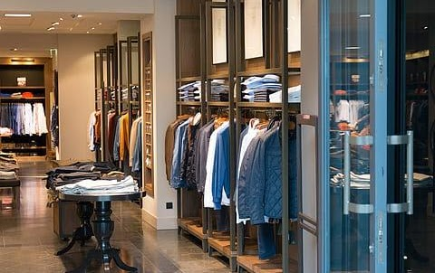
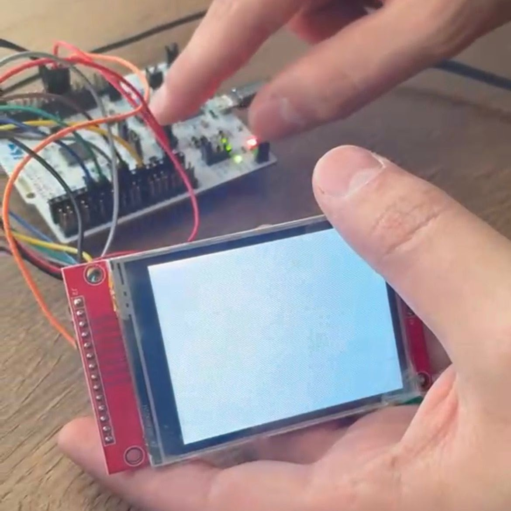
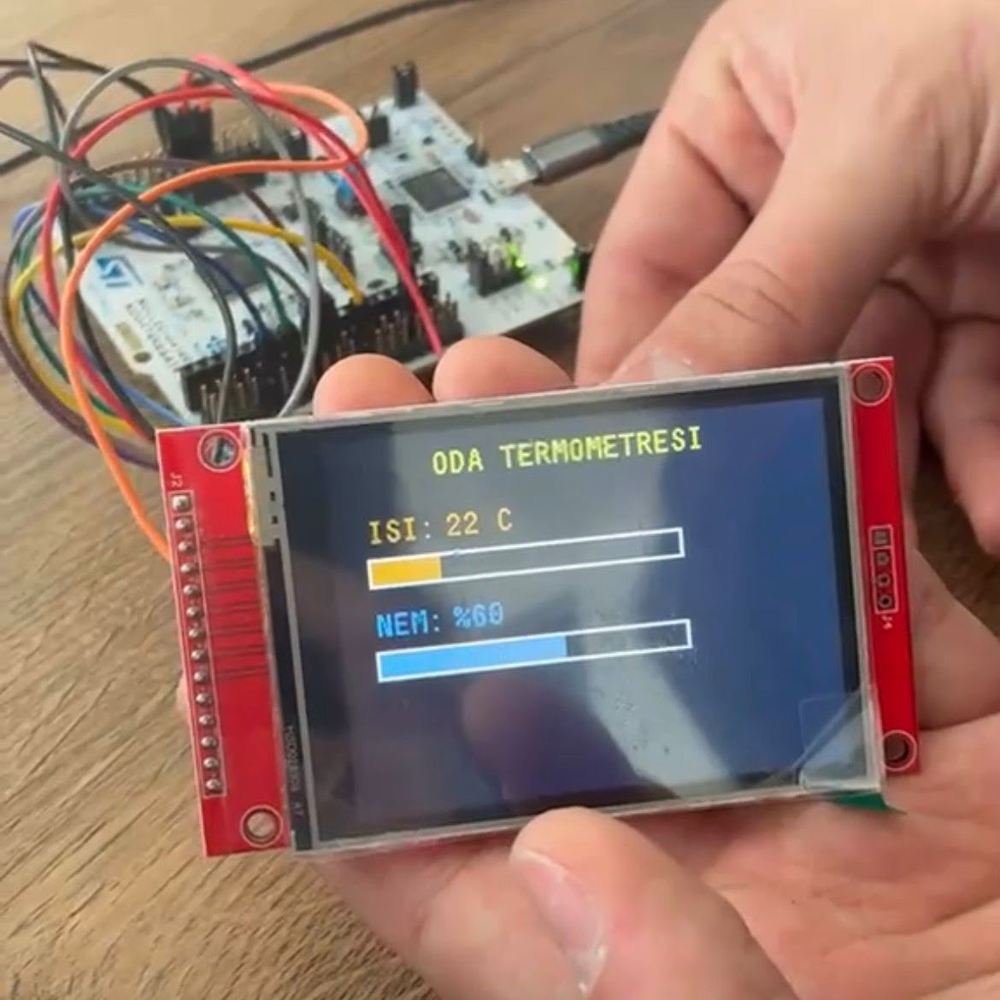
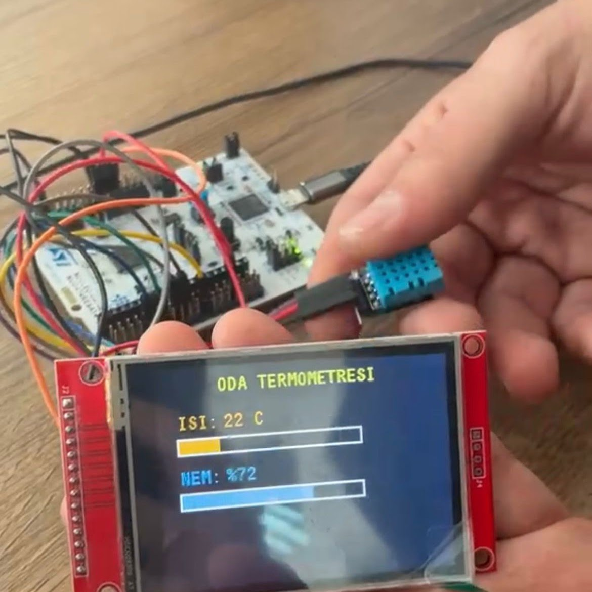
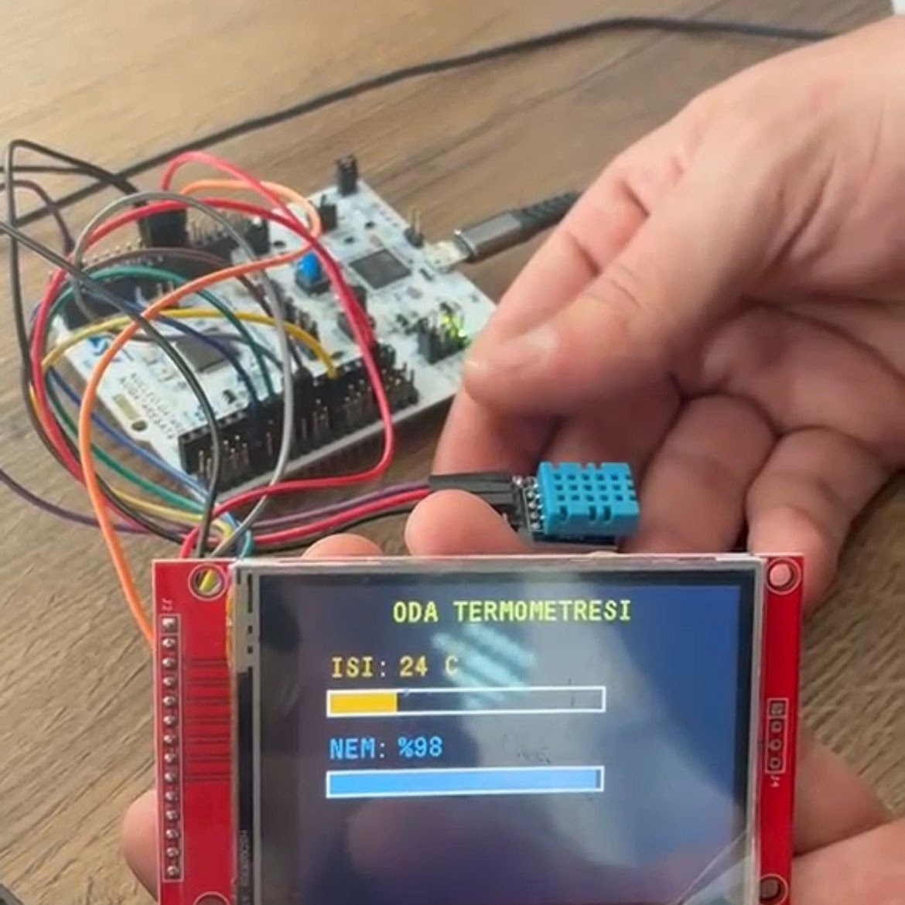

27.03.2005 Ankara / Altındağ doğumluyum. İlköğretimi Mamak’ta, ortaöğretimi Çankaya’da aldım. Şu anda Ankara Yıldırım Beyazıt Üniversitesi’nde yükseköğretim görmekte, aynı zamanda Anadolu Üniversitesi’nde Web Tasarımı ve Kodlama bölümü okumaktayım. Part time olarak satış danışmanlığı yapıyorum. Gezmeyi, kitap okumayı, dizi izlemeyi ve voleybol oynamayı severim.



